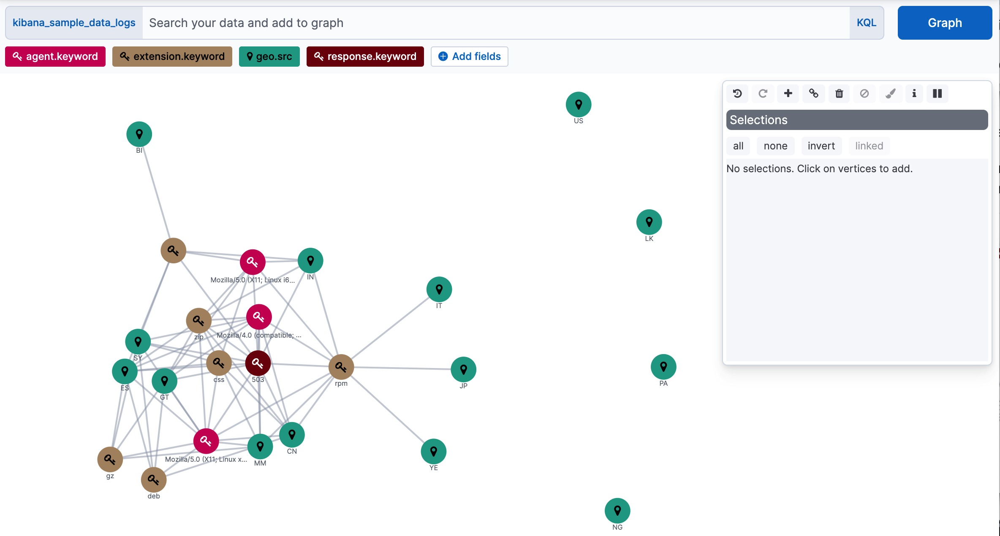
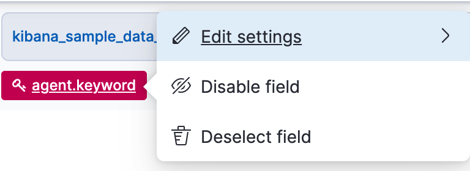
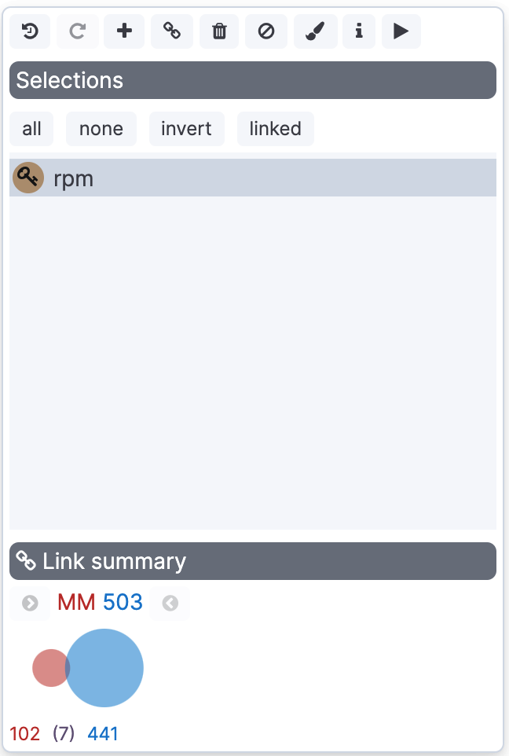
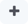
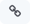
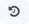
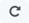
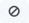

Graph
editGraph
editThe graph analytics features enable you to discover how items in an Elasticsearch index are related. You can explore the connections between indexed terms and see which connections are the most meaningful. This can be useful in a variety of applications, from fraud detection to recommendation engines.
For example, graph exploration could help you uncover website vulnerabilities that hackers are targeting so you can harden your website. Or, you might provide graph-based personalized recommendations to your e-commerce customers.
The graph analytics features provide a simple, yet powerful graph exploration API, and an interactive graph visualization app for Kibana. Both work out of the box with existing Elasticsearch indices—you don’t need to store any additional data to use these features.
How Graph works
editThe graph API provides an alternative way to extract and summarize information about the documents and terms in your Elasticsearch index. A graph is really just a network of related items. In our case, this means a network of related terms in the index.
The terms you want to include in the graph are called vertices. The relationship between any two vertices is a connection. The connection summarizes the documents that contain both vertices' terms.
If you’re into graph theory, you might know vertices and connections as nodes and edges. They’re the same thing, we just want to use terminology that makes sense to people who aren’t graph geeks and avoid any confusion with the nodes in an Elasticsearch cluster.
The graph vertices are simply the terms that you’ve already indexed. The connections are derived on the fly using Elasticsearch aggregations. To identify the most meaningful connections, the graph API leverages Elasticsearch relevance scoring. The same data structures and relevance ranking tools built into Elasticsearch to support text searches enable the graph API to separate useful signals from the noise that is typical of most connected data.
This foundation lets you easily answer questions like:
- What are the shared behaviors of people trying to hack my website?
- If users bought this type of gardening glove, what other products might they be interested in?
- Which people on Stack Overflow have expertise in both Hadoop-related technologies and Python-related tech?
But what about performance? The Elasticsearch aggregation framework enables the graph API to quickly summarize millions of documents as a single super-connection. Instead of retrieving every banking transaction between accounts A and B, it derives a single connection that represents that relationship. And, of course, this summarization process works across multi-node clusters and scales with your Elasticsearch deployment. Advanced options let you control how your data is sampled and summarized. You can also set timeouts to prevent graph queries from adversely affecting the cluster.
Create a graph
editUse Graph to reveal the relationships in your data.
-
Open the main menu, and then click Graph.
If you’re new to Kibana, and don’t yet have any data, follow the link to add sample data. This example uses the Kibana sample web logs data set.
-
Select the data source that you want to explore.
Kibana graphs the relationships between the top fields.
 -
Add more fields, or click an existing field to edit, disable or deselect it.
 -
Enter a query to discover relationships between terms in the selected fields.
For example, to generate a graph of the successful requests to a particular location, search for the
geo.srcfield. The weight of the connection between two vertices indicates how strongly they are related. -
To view more information about a relationship, click any connection or vertex.
 -
Use the graph toolbar to display additional connections:
- To display additional vertices that connect to your graph, click the expand icon .
- To display additional connections between the displayed vertices, click the link icon .
- To explore a particular area of the graph, select the vertices you are interested in, and then click expand or link.
- To step back through your changes to the graph, click undo  and redo .
- To view more relationships in your data, submit additional queries.
- Save your graph.
Customize your graph
editApply custom colors and icons to vertices, configure the number of vertices that a search adds to the graph, block terms, and more.
Style vertex properties
editEach vertex has a color, icon, and label. To change the color or icon of all vertices of a certain field, click it’s field, and then select Edit settings.
To change the color and label of selected vertices, click the style icon in the control bar.
Tune the noise level
editBy default, Graph is configured to tune out noise in your data. If this isn’t a good fit for your data, open Settings > Advanced settings, and then adjust the way Graph queries your data. You can tune the graph to show only the results relevant to you and to improve performance. For more information, see Graph troubleshooting.
You can configure the number of vertices that a search or expand operation adds to the graph. By default, only the five most relevant terms for any given field are added at a time. This keeps the graph from overflowing. To increase this number, click a field, select Edit Settings, and change Terms per hop.
Block terms from the graph
editDocuments that match a blocked term are not allowed in the graph. To block a term, select its vertex and click the block icon  in the graph toolbar. For a list of blocked terms, open Settings > Blocked terms.
Drill down into raw documents
editWith drilldowns, you can display additional information about a selected vertex in a new browser window. For example, you might configure a drilldown URL to perform a web search for the selected vertex term.
Use the drilldown icon in the graph toolbar to show the drilldown buttons for the selected vertices. To configure drilldowns, go to Settings > Drilldowns. See also Disabling drilldown configuration.
Run and pause the layout
editGraph uses a "force layout", where vertices behave like magnets, pushing off of one another. By default, when you add a new vertex to the graph, all vertices begin moving. In some cases, the movement might go on for some time. To freeze the current vertex position, click the pause icon in the graph toolbar.